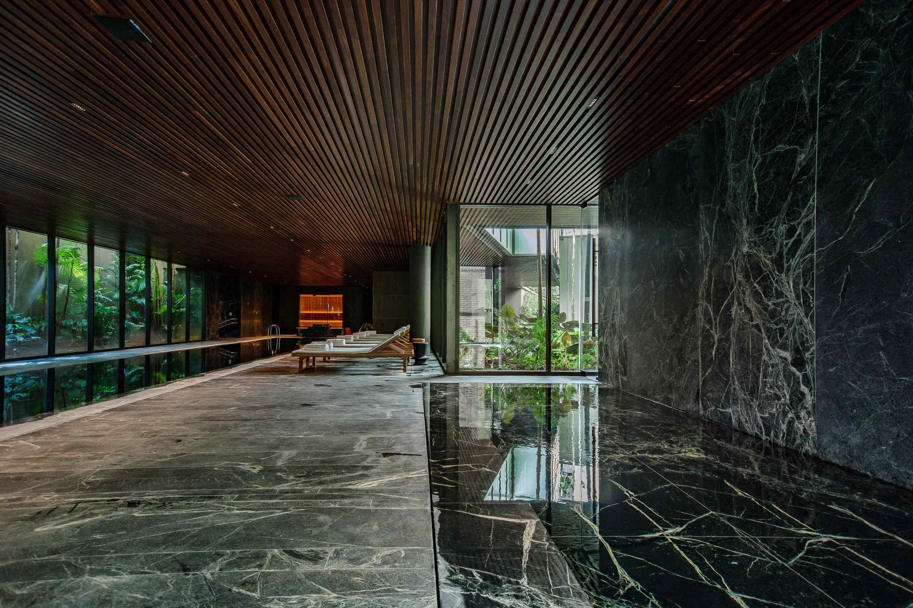

Fotografia & Vídeo · Imóveis e Arquitetura
Contando a história dos espaços através da fotografia e do vídeo.
Ver portfólioPriscila Andrade
Sou Priscila Andrade, fotógrafa e videomaker especializada em imóveis e arquitetura. Paulistana de nascimento, hoje vivo em Itapema, Santa Catarina.
Área de atuação: Itapema, Balneário Camboriú, Porto Belo e região — atendendo imobiliárias, incorporadoras e corretores.
Com 15 anos de experiência, já assinei a produção fotográfica e audiovisual de nomes como Prateleira dos Imóveis, Dicastanha Fotografia Imobiliária, Casas Bacanas, Legacy Brokers e Abyara Prontos, entre outros — unindo técnica, luz e composição para valorizar cada imóvel e ajudar o time comercial a vender mais rápido.
Meu trabalho é focado no mercado imobiliário:
- Fotografia de imóveis e arquitetura
- Captação e edição de vídeo
- Ambientações com Inteligência Artificial
- Conteúdo para redes sociais
- AtendimentoItapema, Balneário Camboriú, Porto Belo e região
- SegmentoImobiliária | Arquitetura
- Experiência15 anos
Projetos
Passe o cursor sobre um projeto para ver as fotos · clique para abrir a galeria completa